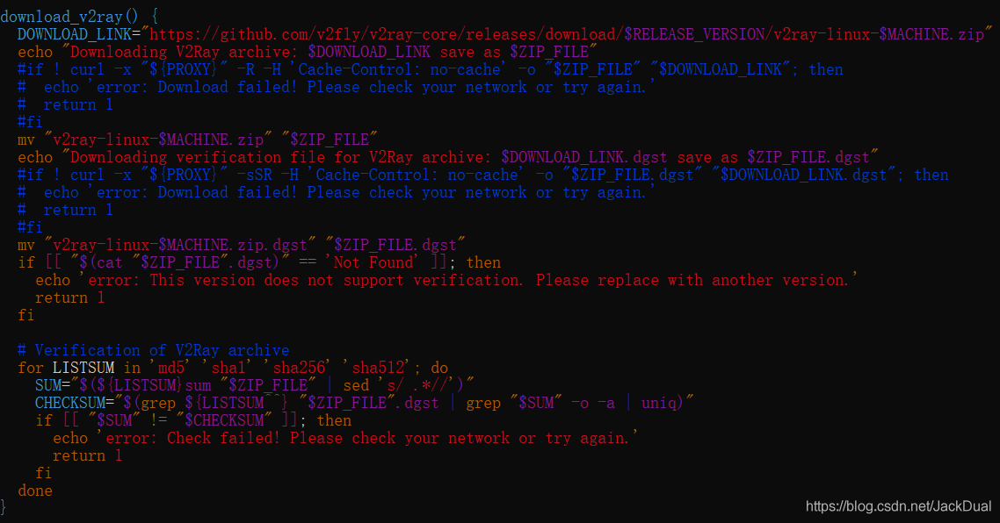
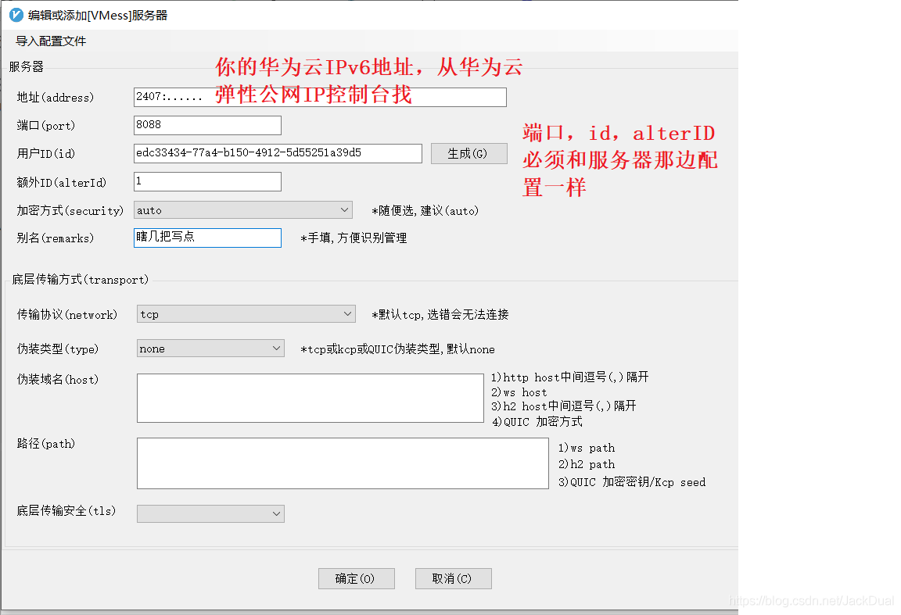
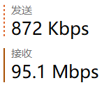

本文使用无ipv4的网络环境发布 重点：本文无任何违反政治法律、无任何与翻墙有关的内容
这学期我们有一门课，华为云给赞助了300元代金券，本来是供我们做云服务的实验用的。偶然发现可以使用ipv6，公测期间ipv6免费，便想着能否搞个ipv6免流玩一玩（虽然疫情期间校园网流量免费）。
接下来的部分是理论知识介绍，有兴趣的可以看看，无兴趣的可以直接跳转到随后的：操作步骤
v2ray在本地开启代理服务器，并将流量通过ipv6统统转发到华为云上，华为云使用ipv4访问后将结果回传给本机。其中有些详细原理我也没有很搞清楚，因此下面的介绍不保证正确性，但配置之后确实可以成功。
v2ray软件的原理是定义多个入口和多个出口，入口接收到数据包后根据路由策略从不同的出口发送出去。因此我们的做法是：本地开启一个v2ray程序，将本地所有流量发送到到v2ray的入口，v2ray将流量通过ipv6出口发送给华为云；华为云上也运行一个v2ray，入口接收本地的出口流量，将流量通过华为云的ipv4转发到真正的目的地。
xxxxxxxxxx<浏览器>---socks--<v2ray inbound>-<v2ray ipv6 outbound>---vmess---<华为云ipv6>-<华为云内部转换ipv6 to ipv 4>-<华为云 v2ray inbound>--<华为云v2ray outbound>---dircet---<真正的服务器>
本地的v2ray入口采用socks协议，出口使用vmess协议，华为云上v2ray入口使用vmess协议，出口直连。
有细心的小伙伴就要问了：v2ray是怎么转发的呀？是直接在源数据包上修改吗？socks协议具体是什么呀？其实我也不清楚，有空的话再学。
使用ssh工具连接到华为云服务器，参照这里安装v2ray。如果华为云访问GitHub不利索，那么自己下载相关文件再上传就行，脚本这里改一下： 
安装成功后，先等待一会，我们来制作两个配置文件。
v2ray的配置文件是json格式的，服务器设置如下：
xxxxxxxxxx{ "inbounds": [ { "port": 8088, "protocol": "vmess", "settings": { "clients": [ { "id": "edc33434-77a4-b150-4912-5d55251a39d5", "alterId": 1 } ] }, "sniffing": { "enabled": true, "destOverride": ["http", "tls"] } } ], "outbounds": [ { "tag":"IP4_out", "protocol": "freedom", "settings": { "domainStrategy": "UseIPv4" } } ], "routing": { "rules": [ { "type": "field", "outboundTag": "IP4_out", "network": "udp,tcp" } ] } }将文件保存为config.json并放在/usr/local/etc/v2ray/文件夹下
执行
xxxxxxxxxxsystemctl enable v2raysystemctl start v2ray服务器配置就结束了。 本地打开v2rayN，选择添加VMess服务器  配置完成后，设置为全局代理，并将网卡ipv4禁用，测试一下！ 看biibili网速还行： 